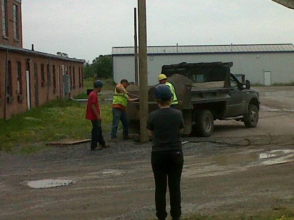
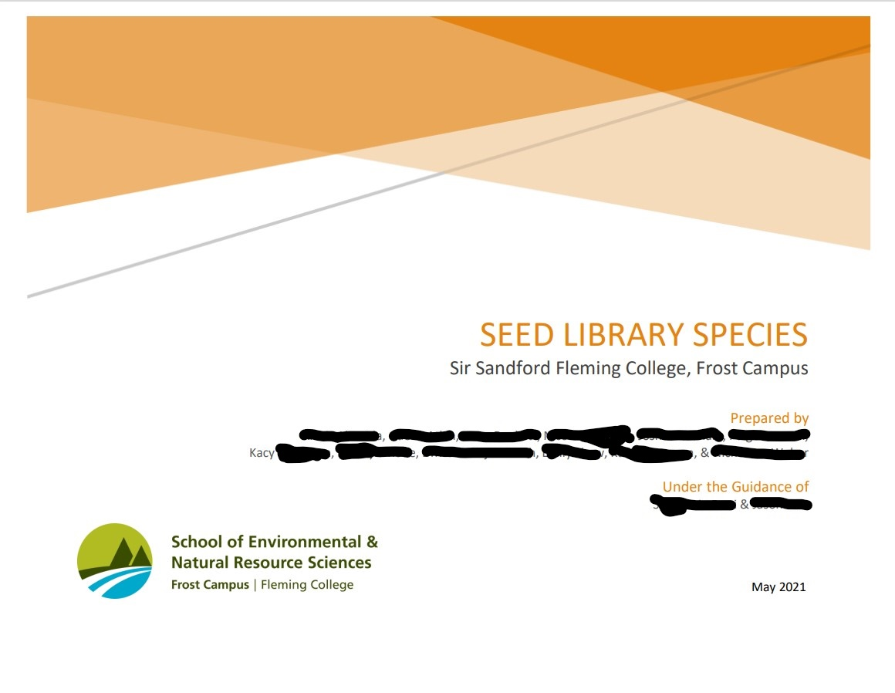

Work History
Tutor, Sir Sandford Fleming College
Online tutoring for students attending Fleming College at Frost Campus on subjects such as: Statistics, Principles of Mathematics, Applied Math, Wildlife Observation, Trees and Shrubs of Ontario, Forest Measurement, and more. I developed learning plans for regular tutees to aid in engagement with course materials. I was responsible for reporting on sessions and maintaining student files within the online administrative system, and organizing my personal schedule and report work hours daily.
Landscape Labourer, BusinessName
Rejuvenated abandoned gardens by cultivating, tilling, adding topsoil, replanting flowers, and adding mulch. Work included long days in the sun, and physical labour such as lifting and moving soil and mulch bags.
Technical Service Representative, CompanyName
Answered a large volume of calls regarding technological troubleshooting. I interpreted customer issues and addressed them through on-the-line help or by scheduling in-store appointments for hardware assistance.
Event Bartender, VenueName
Responsible for cash-only bar, requiring quick recall, math skills and excellent interpersonal communication.
Construction Labourer, FamilyCompany
Maintained personal safety and as well as coworkers’ safety. The job required a positive attitude and ability to work long and occasionally strenuous hours. Received WHMIS and Workplace Safety training. Image from a job installing a hydropole pictured left.
Volunteer Experience
Research Assistant, Fleming College Seedbank
Worked on research for an update to the seedbank program, including seed storage requirements and information about over 100 native plants. I took a leadership role combining the data and maintaining the final document diplaying all research done. I used my design skills to create a working template and title page (censored version pictured below).
Volunteer, [Hometown] Humane Society
Helped staff with upkeep of the facility, including cage cleaning and property maintenance, as well as walking the dogs
Kitchen Prep Cook, CharityRestaurant
Maintained dining area, including set up and take down of tables and chairs, and cleaning before and after service